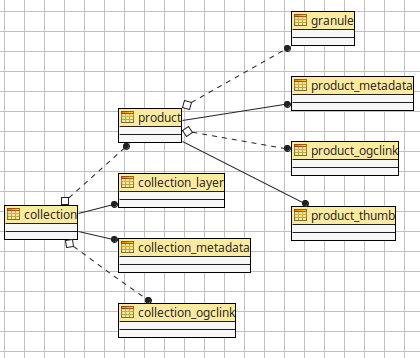

The JDBC store database structure
The JDBC store uses a conventional relational structure, depicted in the following picture:

So a collection has its own primary search attributes, as well as:
- Zero or more OGC links pointing to where the collection is published
- Layer publishing information (for auto-generation of mosaic, layer and eventual coverage view in case the actual data resides locally)
- One or more products
A product in turn is associated to:
- A thumbnail image, in PNG or JPEG format
- Zero or more OGC links pointing to where the product is published
The granule table is designed to contain per product file information in case there is a desire to publish the actual data from the same local GeoServer (but in general, OGC services might be missing or provided by a separate server).
Collections
The collection table currently looks as follows (check the SQL file in the installation instructions for a more up to date version of it):
create table collection (
"id" serial primary key,
"name" varchar,
"primary" boolean,
"htmlDescription" text,
"footprint" geography(Polygon, 4326),
"timeStart" timestamp,
"timeEnd" timestamp,
"productCqlFilter" varchar,
"masked" boolean,
"eoIdentifier" varchar unique,
"eoProductType" varchar,
"eoPlatform" varchar,
"eoPlatformSerialIdentifier" varchar,
"eoInstrument" varchar,
"eoSensorType" varchar check ("eoSensorType" in ('OPTICAL', 'RADAR', 'ALTIMETRIC', 'ATMOSPHERIC', 'LIMB')),
"eoCompositeType" varchar,
"eoProcessingLevel" varchar,
"eoOrbitType" varchar,
"eoSpectralRange" varchar,
"eoWavelength" int,
"eoSecurityConstraints" boolean,
"eoDissemination" varchar,
"eoAcquisitionStation" varchar,
"queryables" varchar[],
"workspaces" varchar[]
);
Most of the attributes should be rather self-explanatory to those familiar with OGC Earth Observation terminology. Each attribute prefixed by "eo" is exposed as a search attribute in OpenSearch, the structure can be modified by adding extra attributes and they will show up and made searchable.
Specific attributes notes:
- A
primarycollection is normally linked to a particular satellite/sensor and contains its own products. Setting "primary" to false makes the collection "virtual" and theproductCQLFilterfield should be filled with a CQL filter that will collect all the products in the collection (warning, virtual collections are largely untested at the moment) - The
footprintfield is used for spatial searches, whiletimeStartandtimeEndare used for temporal ones - The
htmlDescriptiondrives the generation of the visible part of the Atom OpenSearch response, see the dedicated section later to learn more about filling it - The
workspacesfield is an array used to specify the GeoServer workspaces that the collection is associated with. If the field is left empty or null, or if the array contains a null value, the collection will be associated with all workspaces. If the field is populated, the collection will only be associated with the specified workspaces and will be hidden from workspace specific STAC calls.
The collection_ogclink table contains the OGC links towards the services providing visualization and download access to the collection contents. See the "OGC links" section to gather more information about it.
Products
The product table currently looks as follows (check the SQL file in the installation instructions for a more up to date version of it):
-- the products and attributes describing them
create table product (
"id" serial primary key,
"htmlDescription" text,
"footprint" geography(Polygon, 4326),
"timeStart" timestamp,
"timeEnd" timestamp,
"originalPackageLocation" varchar,
"originalPackageType" varchar,
"thumbnailURL" varchar,
"quicklookURL" varchar,
"crs" varchar,
"eoIdentifier" varchar unique,
"eoParentIdentifier" varchar references collection("eoIdentifier") on delete cascade,
"eoProductionStatus" varchar,
"eoAcquisitionType" varchar check ("eoAcquisitionType" in ('NOMINAL', 'CALIBRATION', 'OTHER')),
"eoOrbitNumber" int,
"eoOrbitDirection" varchar check ("eoOrbitDirection" in ('ASCENDING', 'DESCENDING')),
"eoTrack" int,
"eoFrame" int,
"eoSwathIdentifier" text,
"optCloudCover" int check ("optCloudCover" between 0 and 100),
"optSnowCover" int check ("optSnowCover" between 0 and 100),
"eoProductQualityStatus" varchar check ("eoProductQualityStatus" in ('NOMINAL', 'DEGRADED')),
"eoProductQualityDegradationStatus" varchar,
"eoProcessorName" varchar,
"eoProcessingCenter" varchar,
"eoCreationDate" timestamp,
"eoModificationDate" timestamp,
"eoProcessingDate" timestamp,
"eoSensorMode" varchar,
"eoArchivingCenter" varchar,
"eoProcessingMode" varchar,
"eoAvailabilityTime" timestamp,
"eoAcquisitionStation" varchar,
"eoAcquisitionSubtype" varchar,
"eoStartTimeFromAscendingNode" int,
"eoCompletionTimeFromAscendingNode" int,
"eoIlluminationAzimuthAngle" float,
"eoIlluminationZenithAngle" float,
"eoIlluminationElevationAngle" float,
"sarPolarisationMode" varchar check ("sarPolarisationMode" in ('S', 'D', 'T', 'Q', 'UNDEFINED')),
"sarPolarisationChannels" varchar check ("sarPolarisationChannels" in ('horizontal', 'vertical')),
"sarAntennaLookDirection" varchar check ("sarAntennaLookDirection" in ('LEFT', 'RIGHT')),
"sarMinimumIncidenceAngle" float,
"sarMaximumIncidenceAngle" float,
"sarDopplerFrequency" float,
"sarIncidenceAngleVariation" float,
"eoResolution" float
);
Notes on the attributes:
- The
footprintfield is used for spatial searches, whiletimeStartandtimeEndare used for temporal ones - The
htmlDescriptiondrives the generation of the visible part of the Atom OpenSearch response, see the dedicated section later to learn more about filling it - The
crsattribute is optional and is used only for automatic layer publishing for collections having heterogeneous CRS products. It must contain a "EPSG:XYWZ" expression (but the product footprint still need to be expressed in WGS84, east/north oriented). - The EO search attributes need to be filled according to the nature of the product,
eoprefixes generic EOP attributes,optoptical ones,sarradar ones,atmaltimetric,lmblimbic,sspSynthesis and Systematic Product. New attributes can be added based on the above prefixes (at the time of writing only optical and sar attributes have been tested)
The product_thumb table contains the product thumbnail, in PNG or JPEG format, for display in the OpenSearch Atom output.
The product_ogclink table contains the OGC links towards the services providing visualization and download access to the collection contents. See the "OGC links" section to gather more information about it.
OGC links
The OpenSearch module implements "OGC cross linking" by adding pointers to OGC services for to collection/product visualization and download.
-- links for collections
create table collection_ogclink (
"lid" serial primary key,
"collection_id" int references collection("id") on delete cascade,
"offering" varchar,
"method" varchar,
"code" varchar,
"type" varchar,
"href" varchar
);
-- links for products
create table product_ogclink (
"lid" serial primary key,
"product_id" int references product("id") on delete cascade,
"offering" varchar,
"method" varchar,
"code" varchar,
"type" varchar,
"href" varchar
);
This is done by adding a set of owc:offering elements in the Atom response, mapping directly from the table contents:
<owc:offering code="http://www.opengis.net/spec/owc/1.0/req/atom/wcs">
<owc:operation method="GET" code="GetCapabilities" href="http://localhost/sentinel2/sentinel2-TCI/ows?service=WCS&version=2.0.1&request=GetCapabilities" type="application/xml"/>
</owc:offering>
<owc:offering code="http://www.opengis.net/spec/owc/1.0/req/atom/wmts">
<owc:operation method="GET" code="GetCapabilities" href="http://localhost/sentinel2/sentinel2-TCI/gwc/service/wmts?REQUEST=GetCapabilities" type="application/xml"/>
</owc:offering>
<owc:offering code="http://www.opengis.net/spec/owc/1.0/req/atom/wms">
<owc:operation method="GET" code="GetCapabilities" href="http://localhost/sentinel2/sentinel2-TCI/ows?service=wms&version=1.3.0&request=GetCapabilities" type="application/xml"/>
<owc:operation method="GET" code="GetMap" href="http://localhost/sentinel2/sentinel2:sentinel2-TCI/wms?SERVICE=WMS&VERSION=1.1.1&REQUEST=GetMap&FORMAT=image%2Fjpeg&STYLES&LAYERS=sentinel2%3Asentinel2-TCI&SRS=EPSG%3A4326&WIDTH=800&HEIGHT=600&BBOX=-180%2C-90%2C180%2C90" type="image/jpeg"/>
</owc:offering>
The contents of the tables need to be filled with the sane named elements of a OWC offering, the href one can contain a ${BASE_URL} variable that GeoServer will replace with its own base URL.
The granule table
The granule table can be filled with information about the actual raster files making up a certain product in order to publish the collection as a GeoServer image mosaic:
-- the granules table (might be abstract, and we can use partitioning)
create table granule (
"gid" serial primary key,
"product_id" int not null references product("id") on delete cascade,
"band" varchar,
"location" varchar not null,
"the_geom" geometry(Polygon, 4326) not null
);
The granules associated to a product can have different topologies:
- A single raster file containing all the information about the product
- Multiple raster files splitting the products spatially in regular tiles
- Multiple raster files splitting the product wavelength wise
- A mix of the two above
Notes about the columns:
- The
bandcolumn need to be filled only for products split in several files by bands, at the time of writing it needs to be a progressive integer starting from 1 (the module will hopefully allow more meaningful band names in the future) - The
locationis the absolute path of the file - The
the_geomfield is a polygon in WGS84, regardless of what the actual footprint of the file is. The polygon must represent the rectangular extend of the raster file, not its valid area (masking is to be treated separately, either with sidecar mask files or with NODATA pixels)